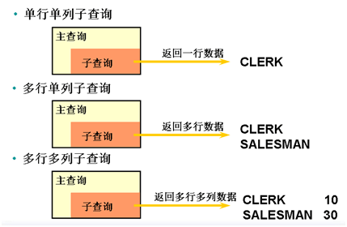

Oracle数据类型
NUMBER
NUMBER表示数字类型，经常被定义成NUMBER（P，S）形式，其中：P表示数字的总位数；S表示小数点后面的位数。
如：Sal NUMBER(6,2)：表示Sal列中的数据，整数位最大为4位，小数位最大位数是2位，也就是最大取值：9999.99。P不写为*号的时候代表默认38。
CHAR
CHAR表示固定长度的字符类型，经常被定义成CHAR（N）形式， N表示占用的字节数，N的最大取值是2000。
例如在表Emp中的Ename列的定义如下：Ename CHAR(20)：表示Ename列中最多可存储20个字节的字符串，并且占用的空间是固定的20个字节。
VARCHAR2
VARCHAR2表示变长的字符类型，定义格式是VARCHAR2（N）， N表示最多可占用的字节数，最大长度是4000字节。
例如在表Emp中的JOB列的定义如下： JOB VARCHAR2(100)：表示JOB列中最多可存储长度为100个字节的字符串。根据其中保存的数据长度，占用的空间是变化的，最大占用空间为100个字节。
CHAR和VARCHAR2的区别
CHAR和VARCHAR2类型
CHAR和VARCHAR2类型都是用来表示字符串数据类型，用来在表中存放字符串信息， 比如姓名、职业、地址等。
CHAR存放定长字符，如果数据存不满定长长度，则补齐空格；
VARCHAR2存放变长字符，实际数据有多少长度则占用多少。
如保存字符串’HELLOWORLD’，共10个英文字母：
CHAR(100)： 10个字母，补齐90个空格，实际占用100个字节。
VARCHAR2(100) ：10个字母，实际占用10个字节。
CHAR类型浪费空间换取查询时间的缩短，VARCHAR2节省空间查询时间较CHAR类型要长。字符串按照自然顺序排序。
CHAR和VARCHAR2的存储编码
字符串在数据库中存储的默认单位是字节，也可显式指定为字符。如：
CHAR(10)，等价于CHAR(10 BYTE)。如果指定单位为字符：
CHAR(10 CHAR)，20个字节。VARCHAR2(10)， 等价于VARCHAR2（10 BYTE）。指定单位为字符：
VARCHAR2(10 CHAR)，20个字节。CHAR和VARCHAR2的最大长度
CHAR类型的最大取值为2000字节，也就是定义为
CHAR（2000）。其中最多保存2000个英文字符，1000个汉字（GBK）。VARCHAR2最大取值为4000字节，也就是
VARCHAR2（4000），最多保存4000个英文字符，2000个汉字（GBK）。CHAR如果不指定长度，默认为1个字节， VARCHAR2必须指定长度。
DATE
DATE用于定义日期时间的数据，长度是7个字节，默认格式是：DD-MON-RR， 例如：“11-APR-71”。如果是中文环境，是“11-4月-71”这种形式。
例如在表Emp中的Hiredate列的定义如下：Hiredate DATE：表示Hiredate列中存放的是日期数据。
LONG和CLOB类型
LONG类型可以认为是VARCHAR2的加长版，用来存储变长字符串，最多达2GB的字符串数据，但是LONG类型有诸多限制，所以不建议使用：
每个表只能有一个LONG类型列；
不能作为主键；
不能建立索引；
不能出现在查询条件中等
CLOB用来存储定长或变长字符串，最多达4GB的字符串数据，ORACLE建议开发中使用CLOB替代LONG类型。
SQL分类
SQL（Structured Query Language）是结构化查询语言的缩写。可分为：
数据定义语言（DDL Data Definition Language）：用于建立，修改和删除数据库对象。包含：
CREATE：创建表或其他对象的结构。
ALTER: 修改表或其他对象的结构。
DROP：删除表或其他对象的结构。
TRUNCATE：删除表数据，保留表结构。
CREATE语句创建表格：
1 | SQL> create table employee ( |
修改表名：
1 | SQL> RENAME employee TO employee1; |
增加列：
在建表之后，要给表增加列可以使用ALTER TABLE的ADD子句实现。如在employee1表最后面增加一列：
1 | SQL> ALTER TABLE employee1 ADD(hiredate DATE DEFAULT SYSDATE); |
删除列：
删除employee1表中的hiredate列：
1 | SQL> ALTER TABLE employee1 DROP(hiredate); |
删除所有表数据，保留结构：
1 | SQL> truncate TABLE employee1; |
TRUNCATE TABLE在功能上与不带WHERE子句的DELETE语句相同：二者均删除表中的全部行。但TRUNCATE TABLE比DELETE速度快，且使用的系统和事务日志资源少。DELETE语句每次删除一行，并在事务日志中为所删除的每行记录一项。
修改列：
建表之后，可以改变表中列的数据类型、长度和默认值，注意这种修改仅对以后插入的数据有效，另外如果表中已经有数据的情况下，把长度由大改小，有可能不成功，比如原来的类型是VARCHAR2(100)，其中已经存放了100个字节长度的数据，如果要改为VARCHAR2(80)，则不会修改成功。
修改表employee1的列job，并增加默认值的设置：
1 | SQL> ALTER TABLE employee1 MODIFY(job VARCHAR2(40) DEFAULT 'manager'); |
删除表：
1 | SQL> drop table employee1; |
数据操纵语言（DML Data Manipulation Language）：用于改变数据表中的数据，和事务相关，执行完后需要通过事务控制语句提交后才真正的将改变应用到数据库中。
包括：
INSERT：将数据插入到数据表中。
UPDATE：更新数据表中已存在的数据。
DELETE：删除数据表中的数据。
事务控制语言（TCL Transaction Control Language）：用来维护数据一致性的语句。
包括：
COMMIT：提交，确认已经进行的数据改变。
ROLLBACK：回滚，取消已经进行的数据改变。
SAVEPOINT：保存点，使当前的事务可以回退到指定的保存点，便于取消部分改变。
数据查询语言（DQL Data Query Language）：用来查询需要的数据。SELECT语句。
数据控制语言（DCL Data Control Language）：用于执行权限的授予与回收工作。
包括：
GRANT：授予，用于给用户或角色授予权限。
REVOKE：用于收回用户或角色的权限。
CREATE USER：创建用户。
SQL基础查询
FROM子句
SELECT用于指定要查询的列，FROM指定要从哪个表中查询。如果要查询所有列，可以在SELECT后面使用*号，如果只查询特定的列，可以直接在SELECT后面指定列名，列名之间用逗号隔开。
列的别名
当我们查询的内容不是一个单纯的列，可能是一个函数，或者表达式，那么在结果集中该字段对应的字段名就是这个函数或者表达式。这样不够清晰，为此我们可以单独指定别名，这样在结果集中该字段的名字就是这个别名。若想显示自己想要的内容，使用双引号。其中”AS”可以省略。
1 | SQL> SELECT ename,sal*12 as "年薪",job from emp; |
AND,OR
与和或。AND优先级高于OR，可以用括号提高优先级。
1 | SQL> select ename,sal,job from emp where sal > 1000 or job = 'CLERK'; |
LIKE
用于模糊查询，支持两个通配符，%：表示0到多个字符，_表示一个字符。
1 | SQL> select ename,sal,job from emp where ename like '_L%'; |
IN,NOT IN
在WHERE子句中可以用比较操作符IN(list)来取出符合列表范围中的数据。其中的参数list表示值列表，当列或表达式匹配于列表中的任何一个值时，条件为TRUE，该条记录则被显示出来。IN也可以理解为一个范围比较操作符，只不过这个范围是一个指定的值列表，NOT IN(list)取出不符合此列表中的数据记录。
1 | SQL> select ename,sal,job from emp where job in('CLERK','SALESMAN'); |
BETWEEN AND
1 | SQL> select ename,sal,job from emp where sal between 1500 and 3000; |
ANY,ALL
当我们需要判断内容>，>=，<，<=一个列表中的多个值时，需要结合ANY或ALL来使用。ANY(LIST)：大于列表中其中之一即可，即大于最小的；ALL(LIST)：大于列表中所有，即大于最大的。
列表中的内容通常不是固定值，而是一个查询结果集，所以常在子查询中，与IN道理一样。如查询谁的薪水比FORD高？如果有多个同名，比任何一个叫FORD的人高就行：
1 | SQL> select ename from emp where sal > any(select sal from emp where ename = 'FORD'); |
查询条件中使用表达式和函数
当查询需要对选出的字段进行进一步计算，可以在数字列上使用算术表达式(+、-、*、/)。表达式符合四则运算的默认优先级，如果要改变优先级可以使用括号。算术运算主要是针对数字类型的数据，对日期类型的数据可以做加减操作，表示在一个日期值上加或减一个天数。
查询条件中不能使用聚合函数！
查询条件中使用算数表达式，查询年薪大于5w元的员工记录：
1 | SQL> select ename,sal,job from emp where sal*12 > 50000; |
ORDER BY
使用ORDER BY字句：用于对结果即按照指定的字段的值升序或者降序进行排序。ASC：升序，默认也是ASC；DESC：降序。
查看工资排名：
1 | SQL> select ename,sal,job from emp order by sal; |
若排序的字段中有NULL值，NULL被视为最大值。当多个字段进行排序时， 每个字段可以分别指定升降序，并且排序顺序按照第一个字段优先排序，只有第一个字段值相同时才按照第二个字段排序，以此类推。
1 | SQL> select ename,sal,job,deptno from emp |
聚合函数（分组函数，组函数）
查询时需要做一些数据统计，比如：查询职员表中各部门职员的平均薪水，各部门的员工人数。当需要统计的数据并不能在职员表里直观列出，而是需要根据现有的数据计算得到结果，这种功能可以使用聚合函数来实现，即：将表的全部数据划分为几组数据，每组数据统计出一个结果。
因为是多行数据参与运算返回一行结果，也称作分组函数、多行函数、集合函数。用到的关键字：
GOURP BY 按什么分组。
HAVING 进一步限制分组结果。
聚合函数是忽略NULL值的。
1、MAX和MIN
用来取得列或表达式的最大、最小值，可以用来统计任何数据类型，包括数字、字符和日期。计算最早和最晚的入职时间，参数是日期：
1 | SQL> select max(hiredate),min(hiredate) from emp; |
2、AVG和SUM
AVG和SUM函数用来统计列或表达式的平均值和和值，这两个函数只能操作数字类型，并忽略NULL值。统计所有员工的总工资和平均工资：
1 | SQL> select avg(sal) avg_sal,sum(sal) sum_sal from emp; |
3、COUNT
COUNT函数用来计算表中的记录条数，同样忽略NULL值。例如获取职员表中一共有多少名职员记录：
1 | SQL> select count(1) from emp; |
分组
1、GROUP BY子句
其是为聚合函数服务的，可以在统计数据时细化分组。他允许将某个字段值一样的记录看成一组，然后进行统计。而不是将整张表所有记录看成一组，那么每组可以出一个统计结果。
查看每个部门的最高工资，最低工资：
1 | SQL> select deptno "部门", max(sal) "最高工资",min(sal) "最低工资" |
SQL语法要求：除了聚合函数，其他不在GROUP BY子句中的列名，不能出现在SELECT语句后面。
GROUP BY进行分组的字段应在整张表中有重复数据，否则分组毛有意义GROUP BY子句后面允许指定多个字段，那么是按照这些字段值的组合相同的记录看作一组。
查看每个部门每种职位的平均工资以及工资总和：
1 | SQL> select deptno,job,avg(sal),sum(sal) |
2、HAVING字句
HAVING 也是用于添加过滤条件的，它的过滤实际是在统计结果之后进行的，所以HAVING是为统计结果进行过滤使用的，其不能独立出现，必须跟在GROUP BY子句后面。
查看平均工资大于2000的部门：
1 | SQL> select deptno,avg(sal) from emp |
HAVING子句解决了WHERE子句后面不能跟聚合函数的问题：
1 | SQL> select deptno,avg(sal) from emp where avg(sal) > 2000 |
该语句会报错，原因在于我们的过滤条件是平均工资高于2000，而WHERE的过滤时机在于：第一次从表中查询数据时进行过滤，只有满足WHERE条件的记录才会被查询出来。而判断平均工资高于2000，首先平均工资统计是建立在数据查询出来的基础上的，所以这时WHERE已经完成了过滤。改使用HVING 子句就可解决。
查询语句的执行顺序
当一条查询语句中包含所有的子句，执行顺序依下列子句次序：
FROM 子句：执行顺序为从后往前、从右到左。数据量较少的表尽量放在后面。
WHERE子句：执行顺序为自下而上、从右到左。将能过滤掉最大数量记录的条件写在WHERE 子句的最右。
GROUP BY：执行顺序从左往右分组，最好在GROUP BY前使用WHERE将不需要的记录在GROUP BY之前过滤掉。
HAVING 子句：消耗资源。尽量避免使用，HAVING 会在检索出所有记录之后才对结果集进行过滤，需要排序等操作。
SELECT子句：少用*号，尽量取字段名称。ORACLE 在解析的过程中，通过查询数据字典将*号依次转换成所有的列名，消耗时间。
ORDER BY子句：执行顺序为从左到右排序，消耗资源。
SQL关联查询
关联查询
当从多张表查询数据时，我们会建立关联关系然后在张表中进行查询工作，重点就是如何指定这些表中数据的对应关系(关联关系)，N张表查询时至少要有N-1个连接条件。
查询每个员工的名字，工资，以及部门名称和所在地：
1 | SQL> select e.ename,e.deptno,d.dname,d.loc |
或者：
1 | SQL> select e.ename,e.deptno,d.dname,d.loc |
内连接
内连接只返回两个关联表中所有满足连接条件的记录。
外连接
内连接返回两个表中所有满足连接条件的数据记录，在有些情况下，需要返回那些不满足连接条件的记录，需要使用外连接，即不仅返回满足连接条件的记录，还将返回不满足连接条件的记录。
将员工SOCTT的部门号改为50：
1 | SQL> update emp set deptno = 50 |
执行下面语句：
1 | SQL> select e.ename,d.dname |
会发现SCOTT员工没有被查询出来，原因是其不满足连接条件。
外连接允许我们在关联查询的时候，以一张表作为驱动表(数据要显示全)。该表的数据全部会体现再结果集中，但是来自关联表中的字段由于不满足连接条件没有对应的记录，所以全部取NULL。外连接主要解决的问题就是显示再关联查询中不满足连接条件的记录。
外连接分为：左外连接，右外连接，全外连接。
使用左外连接查询员工信息：
1 | SQL> select e.ename,d.dname |
可以看出，虽然SCOTT不满足连接条件，但也出现在查询结果中了。
自连接
当前表的一条记录对应当前表的多条记录，自连接的设计是为了解决同类型数据间又存在上下级关系的树状结构的保存与关联。
查看员工的名字以及他领导的名字：
1 | SQL> select e.ename "员工",m.ename "领导" |
若想将没有领导的人也列出来，可以将代码改为：
1 | SQL> select e.ename "员工",m.ename "领导" |
等同于：
1 | SQL> select e.ename "员工",m.ename "领导" |
子查询
子查询通常是将其查询出来的结果集提供给其他SQL语句使用，通常嵌套在实际要运行的SQL语句之中。
1、子查询在WHERE子句中。
在WHERE查询条件中的限制条件不是一个确定的值，而是来自于另外一个查询的结果。比如查看工资比CLARK高的员工信息：
1 | SQL> select ename,job,sal from emp |
根据返回结果的不同，子查询可分为单行单列子查询、多行单列子查询及多行多列子查询。

如果子查询返回多行，主查询中要使用多行比较操作符，包括IN、ALL、ANY。其中ALL和ANY不能单独使用，需要配合单行比较操作符>、>=、<、<= 一起使用。
例如查询出部门中有SALESMAN但职位不是SALESMAN的员工的信息：
1 | SQL> select ename,job,sal from emp |
由于子句select deptno from emp where job = 'SALESMAN'查询结果为多行单列：
1 | SQL> select deptno from emp |
所以不能用=，而用IN。
查看所有比SALESMAN和CLERK职位工资都要高的员工信息：
1 | SQL> select ename,job,sal from emp |
EXISTS关键字:
用在过滤条件中，该关键字后面跟一个子查询只要子查询能查询至少一条数据，EXISTS就返回TRUE。
例如列出那些有员工的部门信息：
1 | SQL> select d.deptno,d.dname from dept d |
2、子查询在HAVING部分
子查询不仅可以出现在WHERE子句中，还可以出现在HAVING部分。
例如查询列出最低薪水高于30号部门的最低薪水的部门信息：
1 | SQL> select deptno,min(sal) from emp |
3、子查询在FROM部分
在查询语句中，FROM子句用来指定要查询的表。如果要在一个子查询的结果中继续查询，则子查询出现在FROM 子句中，这个子查询也称作行内视图或者匿名视图。这时，把子查询当作视图对待，但视图没有名字，只能在当前的SQL语句中有效。
查询出薪水比本部门平均薪水高的员工信息：
1 | SQL> select e.ename,e.job,e.sal from emp e, |
4、子查询在SELECT部分
把子查询放在SELECT子句部分，可以认为是外连接的另一种表现形式，使用更灵活：
1 | SQL> select e.ename,e.job,e.sal, |
可以看出，即使不满足where条件的SCOTT也被列出来了，所以，相当于外连接。
5、DDL中使用子查询：
创建表可以将一个查询的结果集创建为一张表。
创建一个10号部门员工信息表 ：
1 | SQL> create table emp_10 |
分页查询
分页是将查询的结果集分批显示目的视为了解决时间，性能，资源消耗，和用户需求。当查询结果集条目数非常多时。通常会使用分页。分页在标准SQL中没有定义，所以不同的数据库管理系统对于分页的语句也是不一样的。
ROWNUM：ROWNUM被称作伪列，用于返回标识行数据顺序的数字。该关键字不是所有数据库都有的。
ROWNUM在SELECT被当作一个字段去使用，他不是表中真实的字段，当我们从表中查询出一条数据后，该字段就会为这一条记录编一个行号，从1开始，自动递增。ROWNUM默认值为1。在使用ROWNUM对结果集进行编号时不要使用ROWNUM做>1以上的数字的判断，否则该结果集将得不到任何记录。除非ROWNUM从1开始(包含1)。
例如：
1 |
|
ROWNUM只能从1计数，不能从结果集中直接截取。下面的查询语句将没有结果：
1 | SQL> select rownum,ename,job from emp |
注意区分下面语句，此处ROWNUM可以不从1开始，因为他已经生成一张表了：
1 | SQL> select * from |
按照工资从高到低排序后，取6到10名：
1 | SQL> select * from |
上面的写法是先编号后排序的，所以上面这种写法得出的序号是不对的。而应该先排序再编号，再根据编号取范围（嵌套两层，先排序，排序结果再编号）：
1 | SQL> select * from |
排序函数
可以根据指定的字段进行分组，再根据指定的字段排序后生成一个组内编号。
1、ROW_NUMBER：生成组内连续且唯一的数字
查看公司每个部门的工资排名，按照部门分组，按照工资降序排列生成编号：
1 | SQL> select ename,deptno,sal, |
2、RANK函数：生成不连续不唯一的数字排序字段相同的记录，得到的数字一样后续内容会根据重复的行数自动跳号。比如：
1 | SQL> select ename,deptno,sal, |
3、DENSE_RANK()：函数生成连续但不唯一的数字：
1 | SQL> select ename,deptno,sal, |
高级分组函数
集合操作
1、UNION和UNION ALL
用来获取两个或两个以上结果集的并集（结果集的列必须一一对应）：
UNION操作符会自动去掉合并后的重复记录。
UNION ALL返回两个结果集中的所有行，包括重复的行。
UNION操作符对查询结果排序，UNION ALL不排序。
合并职位是’MANAGER’的员工和薪水大于2500的员工集合，查看两种方式的结果差别：
UNION：
1 | SQL> select ename,job,sal from emp |
UNION ALL：
1 | SQL> select ename,job,sal from emp |
2、INTERSECT（[ˌɪntəˈsekt]，相交）
INTERSECT函数获得两个结果集的交集，只有同时存在于两个结果集中的数据，才被显示输出。使用INTERSECT操作符后的结果集会以第一列的数据作升序排列。
1 | SQL> select ename,job,sal from emp |
3、MINUS（英[ˈmaɪnəs]，减去）
MINUS函数获取两个结果集的差集。只有在第一个结果集中存在，在第二个结果集中不存在的数据，才能够被显示出来。也就是结果集一减去结果集二的结果。
1 | SQL> select ename,job,sal from emp |
视图
视图(VIEW)也被称作虚表，即虚拟的表，是一组数据的逻辑表示，其本质是对应于一条SELECT语句，结果集被赋予一个名字，即视图名字。视图本身并不包含任何数据，它只包含映射到基表的一个查询语句，当基表数据发生变化，视图数据也随之变化。
作用：
1、重用子查询。SELECT语句中的FROM子句中，我们常会使用一个子查询，然后将结果当作表再进行查询工作，若很多SELECT语句中都要用到该子查询，就可以将这个子查询定义为一个试图进行重用，这样也可以简化SQL语句的复杂度。
2、限制数据访问，可以隐藏真实的表中字段信息，表的名字，字段的名字，这样可以避免访问敏感信息等。
根据视图所对应的子查询种类分为几种类型：
SELECT语句是基于单表建立的，且不包含任何函数运算、表达式或分组函数，叫做简单视图，此时视图是基表的子集；
SELECT语句同样是基于单表，但包含了单行函数、表达式、分组函数或GROUP BY子句，叫做复杂视图；
SELECT语句是基于多个表的，叫做连接视图。
创建一个简单视图V_EMP_10，来显示部门10中的员工的编码、姓名和薪水：
1 | SQL> create view v_emp_10 |
修改视图
由于视图自身没有结构，完全取决于对应的查询语句，所以修改视图就是替换对应的查询语句。
1 | SQL> create or replace view v_emp_10 |
对视图进行DML操作就是对视图数据来源的基表进行操作。只能对简单试图进行DML操作，复杂视图不允许DML操作，即视图定义中包含了函数、表达式、分组语句、DISTINCT关键字或ROWNUM伪列，不允许执行DML操作。
由于视图只能看到emp表中的三个字段，所以就算向视图中所有字段插入值，那么实际插入emp表中时，除了这几个字段外，其他视图看不见的字段全部插入字段默认值NULL。
1 | SQL> insert into v_emp_10 values(7935,'KangKang',4500,20); |
下面这条语句，通过视图插入到EMP表中，但是因为部门号是10，而不是视图中的20，所以视图看不见，无法再对这个对象进行修改，这就对基表数据产生了污染，修改视图数据同样可能存在将视图数据修改后，导致视图无法再查看到它们。
1 | SQL> insert into v_emp_10 values(7936,'Jane',4000,10); |
创建具有CHECK OPTION约束的视图
可以为视图添加CHECK OPTION选项，这样对视图进行DML操作时，视图会检查操作完毕后对该记录是否可见，可见不允许操作。
1 | SQL> create or replace view v_emp_10 |
创建具有READ ONLY约束的视图
当视图被设置为READ ONLY后，不允许对该视图进行DML操作，其为只读的。
1 | SQL> create or replace view v_emp_10 |
复杂视图
对应的SELECT语句中含有函数，表达式，分组，连接查询。
创建一个显示每个部门薪水情况的视图：
1 | SQL> create view v_emp_sal |
复杂视图不能进行DML操作。
当不再需要视图的定义，可以使用DROP VIEW语句删除视图：
1 | SQL> drop view v_emp_10; |
序列
序列是一个数据库对象作用是根据指定的规则生成一组数字，每次返回一个数字。常用于为表中的主键提供值。
主键：通常每张表的第一个字段就是主键，主键字段的值要求在整张表中不能为空，且值不能重复。目的是用于唯一标识每一个记录。
创建一个序列，起始数据是100，步进是1：
1 | SQL> create sequence emp_seq |
序列有两个伪列
NEXTVAL：使序列生成一个数字，第一次使用时，返回的是START WITH指定的值。需要注意，序列不可逆，一旦获取下一个数字后，就不能得到上一个数字了。
CURRVAL：获取序列最后一次生成的数字，可以调用多次，不会造成序列生成下一个数字。CURRVAL必须要在序列创建完毕后，至少调用过一侧NEXTVAL输出生成一个数字后才可以使用。
测试让序列生成一个数字：
1 | SQL> select emp_seq.nextval from dual; |
每运行一次，数字增加10。
获取序列最后生成的数字：
1 | SQL> select emp_seq.currval from dual; |
删除序列的语法如下：
1 | SQL> drop sequence emp_seq; |
索引
索引也是数据库对象，用来提高检索效率，排序效率有效的使用会带来很好的效果。数据库管理系统自行维护索引的算法，我们只需要指定何时为某表的某字段添加即可。
为emp表的ENAME字段添加索引：
1 | SQL> create index idx_emp_ename on emp(ename); |
复合索引也叫多列索引，是基于多个列的索引。如果经常在ORDER BY子句中使用job和sal作为排序依据，可以建立复合索引：
1 | SQL> create index idx_emp_jobsal on emp(job,sal); |
当做下面的查询时，会自动应用索引idx_emp_jobsal：
1 | SQL> select empno,ename,job,sal from emp |
删除索引：
1 | SQL> drop index idx_emp_jobsal; |
合理使用索引提升查询效率：
为经常出现在WHERE子句中的列创建索引。
为经常出现在ORDER BY、DISTINCT后面的字段建立索引。如果建立的复合索引，索引的字段顺序要和这些关键字后面的字段顺序一致。
为经常作为表的连接条件的列上创建索引。
不要在经常做DML操作的表上建立索引。
不要在小表上建立索引。
限制表上的索引数目，索引并不是越多越好。
删除很少被使用的、不合理的索引。
约束
约束的类型：
非空约束(Not Null)，简称NN。
唯一性约束(Unique)，简称UK。
主键约束(Primary Key)，简称PK。
外键约束(Foreign Key)，简称FK。
检查约束(Check)，简称CK。
非空约束
建表时添加非空约束：
1 | SQL> create table employees( |
取消非空约束：
1 | SQL> alter table employees modify(hiredate date null); |
唯一性约束
唯一性(Unique)约束条件用于保证字段或者字段的组合不出现重复值。当给表的某个列定义了唯一约束条件，该列的值不允许重复，但允许是NULL值。
建表的时候添加唯一性约束：
1 | SQL> create table employees1( |
主键约束
主键(Primary Key)约束条件从功能上看相当于非空（NOT NULL）且唯一（UNIQUE）的组合。主键字段可以是单字段或多字段组合，即：在主键约束下的单字段或者多字段组合上不允许有空值，也不允许有重复值。
主键可以用来在表中唯一的确定一行数据。一个表上只允许建立一个主键，而其它约束条件则没有明确的个数限制。
主键选取的原则：
主键应是对系统无意义的数据。
永远也不要更新主键，让主键除了唯一标识一行之外，再无其他的用途。
主键不应包含动态变化的数据，如时间戳。
主键应自动生成，不要人为干预，以免使它带有除了唯一标识一行以外的意义。
主键尽量建立在单列上。
建表的时候添加主键约束：
1 | SQL> create table employees2( |
建表后添加主键，首先创建一张没有主键的表：
1 | SQL> create table employees3( |
再添加主键：
1 | SQL> alter table employees3 |
外键约束
外键约束条件定义在两个表的字段或一个表的两个字段上，用于保证相关两个字段的关系。比如emp表的deptno列参照dept表的deptno列，则dept称作主表或父表，emp表称作从表或子表。
1 | SQL> create table employees4( |
检查约束
检查(Check)约束条件用来强制在字段上的每个值都要满足Check中定义的条件。当定义了Check约束的列新增或修改数据时，数据必须符合Check约束中定义的条件。
员工的薪水必须大于2000元，增加检查约束：
1 | SQL> alter table employees4 |